PREMIER GAME |
|
| 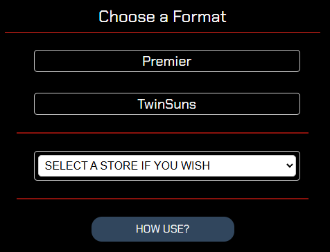 |
Click on PREMIER If you are at a known store on the list and in a tournament, select the store before clicking the option. |
| 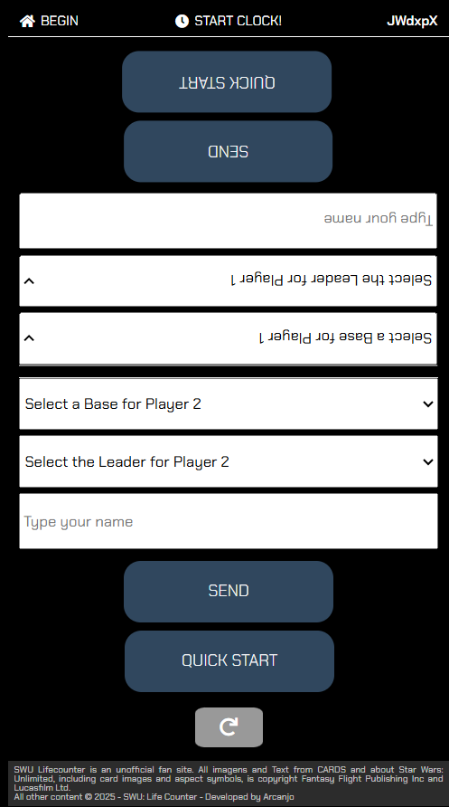 |
Select Base and Leader for each Player For fun games, you can click on QUICK START to start a game without infos. |
| 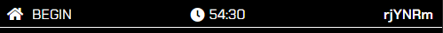 |
On top menu you have: BEGIN - Back to Home Menu START CLOCK - Clock for games ID - For live games and streaming |
| 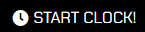 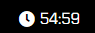 |
Click on START CLOCK to initiate your 55 minutes Click again to stop the game and reset the clock |
| 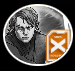 |
Click on your Leader image when use Epic Action Click again to reset. |
| 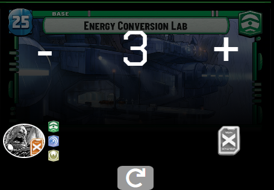 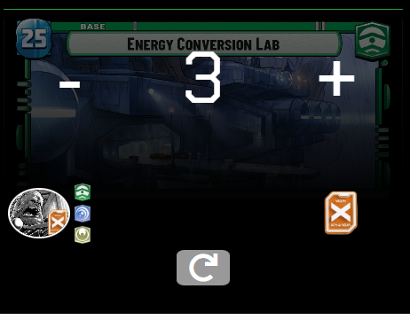 |
For Bases with Epic Action, click on Epic Action Token Click again to reset. |
| 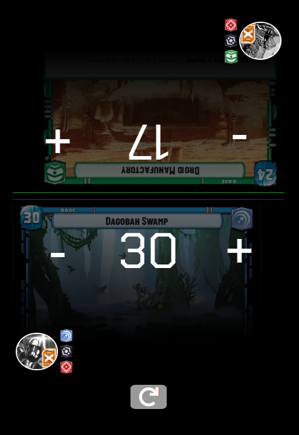 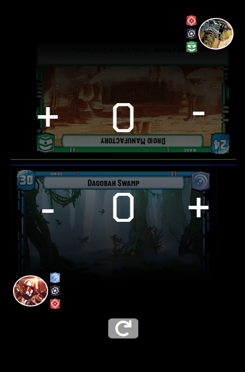 |
Click on to reset the game and start again All counters and Epic Actions will be reset. |
TWINSUNS GAME |
|
|
Click on TWISUNS Don't need to select any store, this format don't have live games and streaming support, for now. |
|
| 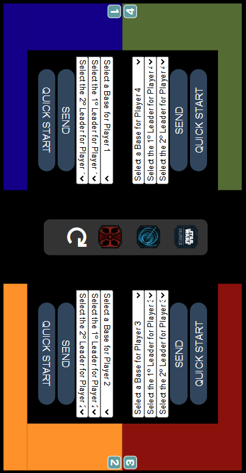 |
Like on Premier, select Base and Leaders for each player Click on QUICK START to start quickly. Each player has a number and a color for identification. |
| 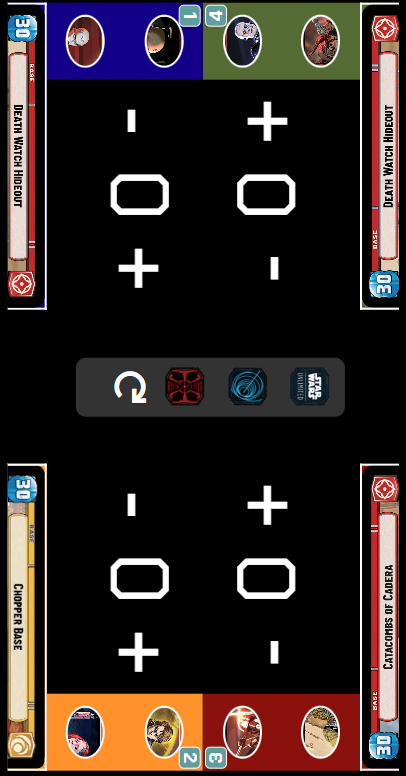 |
The CLOCK and Leader's Epic Action, works like Premier format. Here, if a base has Epic Action, will work like Leader's, click on top when used. |
|
In Twinsuns will have 3 Tokens to get: INITIATIVE - Player who will start the next round. PLAN - Buy 1 card from your deck and put 1 card on the bottom of your deck. BLAST - Deal 1 damage to enemy bases. After start of the next round, click on for reset tokens place. |
|
| 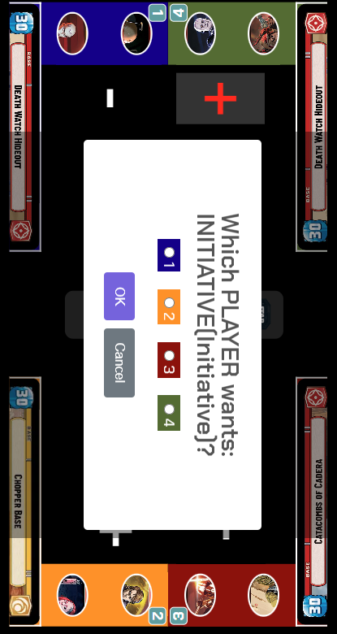 |
Click on a token and then select the player who wants take that token. Selected token will stay on that Player area. |
| 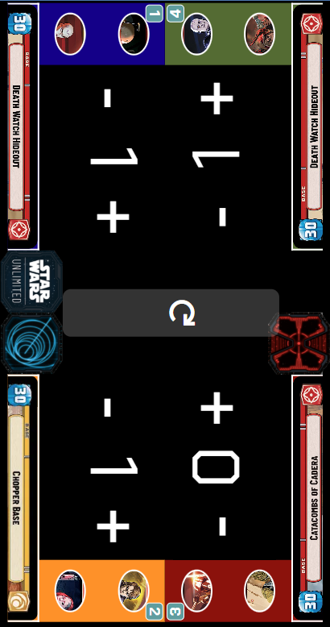 |
If Blast Token was selected, each enemy base will be dealt 1 damage automaticaly. Selected token will stay on that Player area. |
| 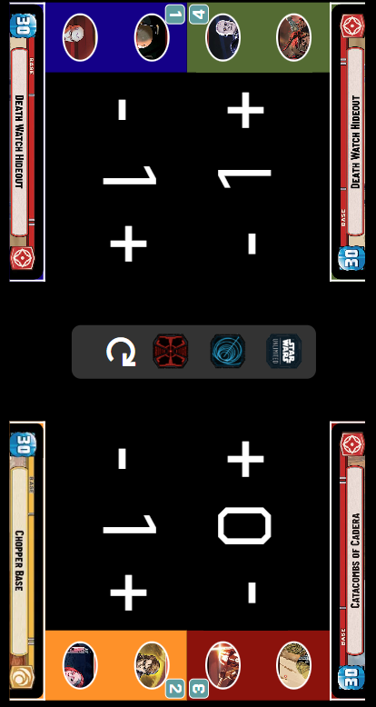 |
Once all tokens are selected and a new round begins, Click on to reset tokens place. |